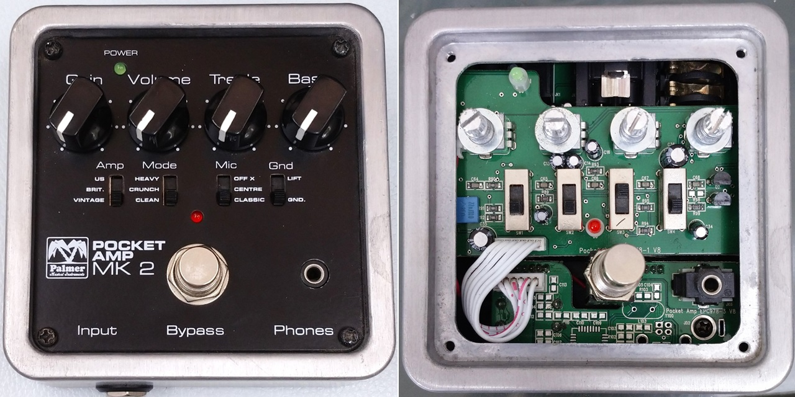
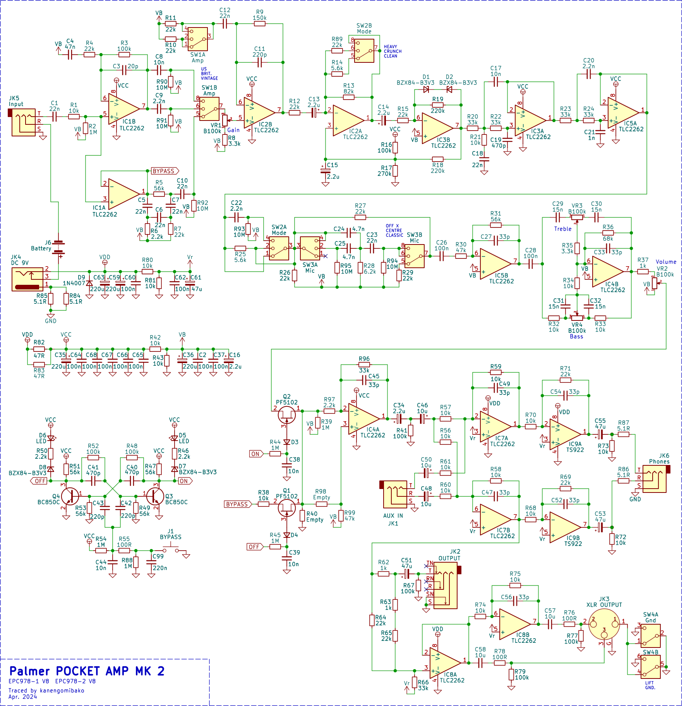
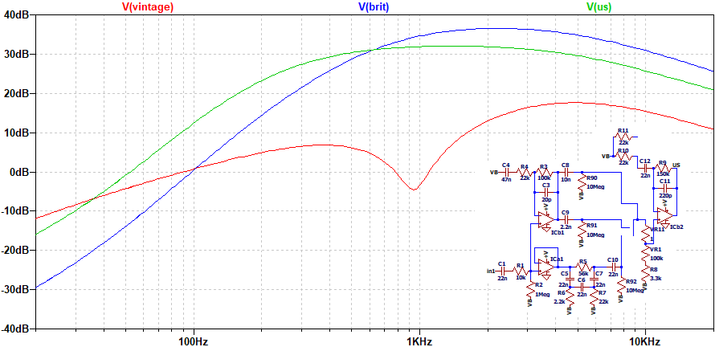
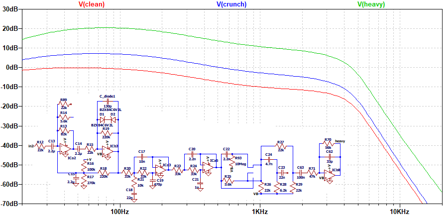
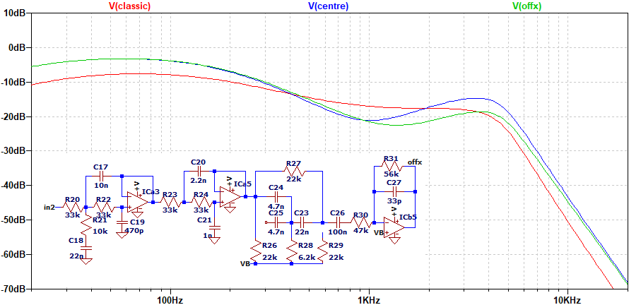
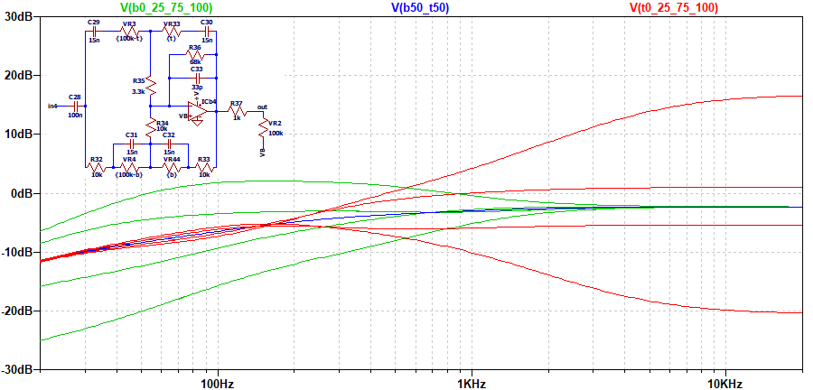

Palmer POCKET AMP MK 2 解析
2024年09月28日 カテゴリー：修理・改造・解析

VOX amPlug Classic Rockでは、アナログ回路によるキャビネットシミュレーターがありました。他の機種ではどのようになっているのか、Palmer POCKET AMP MK 2を入手し調べました。KiCadデータ（基板画像入り）とLTspiceの回路図データはGitHubにあります。
▽回路図

Tech 21 SansAmp GT2（TONEPADの回路図）やBehringer GDI21に似ていますが、一部の部品の値は異なっています。スライドスイッチのところには、スイッチングノイズを抑える目的と思われる10MΩの抵抗が入っています。
IC2A、IC3BのあたりはTech 21 SansAmp BDDI V1後期型の謎モジュールと同じです。SansAmp GT2は、ある時期から回路が変更されBDDIと同じ謎モジュールが使われるようになったと思われます。そしてPOCKET AMP MK2はその謎モジュールが搭載されたバージョンのGT2を参考にしていると考えられます。
▽シミュレーション
- Amp（VINTAGE BRIT. US ）

VINTAGEではフェンダータイプのトーンのように中音域が下がります。BRIT.やUSでは中音域の谷がなく、低音域のカットがあります。
- Mode（CLEAN CRUNCH HEAVY） Mic: CLASSIC

ゲインが変化し、周波数特性も少し変化します。
- Mic（CLASSIC CENTRE OFF X） Mode: CLEAN

キャビネットシミュレータに相当すると思われる部分です。SansAmp BDDIでも同様の回路があります。CENTREやOFF Xでは中音域がカットされます。
- Bass Treble

C28の容量やR36の抵抗値が低いのが影響し、低音域が下がっています。